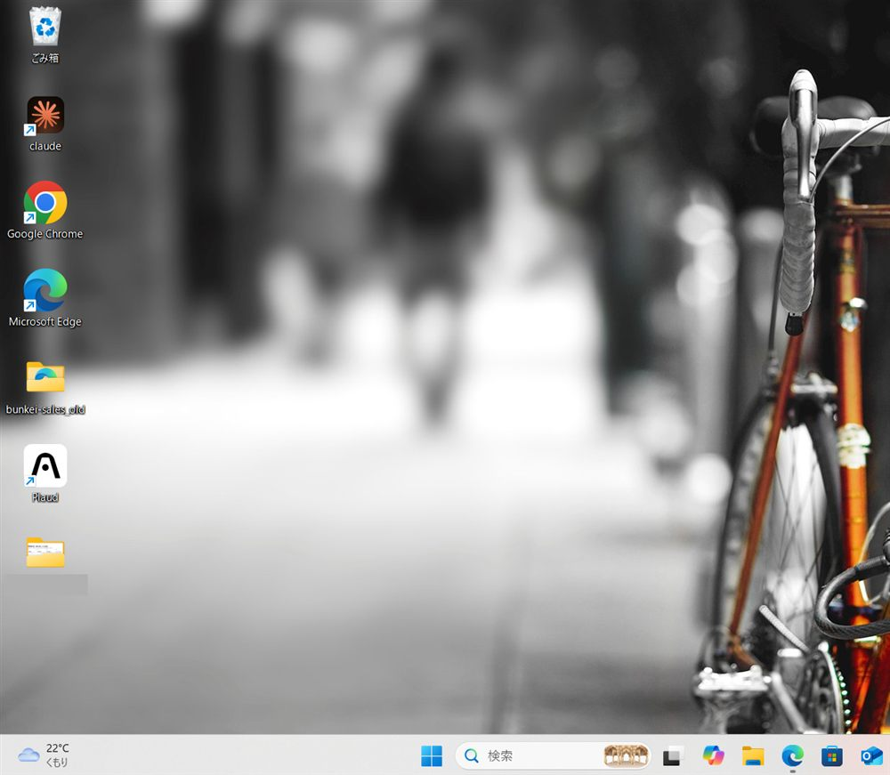

ある日、Claudeのアイコンだけが白くなった
以前Claude Codeに作ってもらったデスクトップのショートカット。ある日見ると、Claudeだけが真っ白なアイコンになっていました。
原因は「アイコンの場所」の書き方
Claude Codeに調べてもらうと、ショートカットにはアイコンの場所が「バージョン2.7032.0.0のフォルダ」と固定で書かれていました。
Claudeはストアアプリなので、更新のたびにフォルダが入れ替わりますだって。
起動はできるとClaudeは言うけど、そうじゃないだろう。アイコンの意味をなさないだろう、白のファイルは！
直し方は「自分でドラッグ」。ちょっと失望(笑)
提案された直し方は、スタートメニューからデスクトップへドラッグして作り直すこと。せっかくAIに作ってもらったのに、結局は手作業です。
ただ、理由を聞いて納得しました。
- スクリプトで作る:アイコンの場所を固定で書き込むので、更新で白くなる
- スタートメニューからドラッグ:アプリそのものを指すので、アイコンも毎回取り直してくれる
5秒で終わって、しかも更新に強い。自分でやったほうが良い、珍しい例でした。
バイブコーディングにも通じる教訓
変わるものを、その時点の場所で固定して書くと後で壊れる。プログラミングでは「ハードコーディング」と呼ぶそうです。
そこで今後は、Claude Codeに頼むときにこう添えることにしました。
更新やPC移動があっても壊れない作りにして
専門用語を知らなくても、困りごとを日本語で伝えれば十分です。
結論:毎日使うならタスクバーへ
ドラッグで作り直したら、アイコンは無事に戻りました。

ただ、Claude Codeは毎日使うので、最終的にはタスクバーにピン留めすることにしました。
AIに任せることと、自分でやること。白いアイコン1つが、その線引きを考えるきっかけになりました。